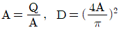
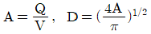
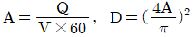
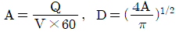

환경기능사 (2007-09-16 기출문제)
1과목: 대기오염방지
1. 다음 중 집진장치에 대한 설명으로 옳은 것은?
- 사이클론은 여과집진장치에 해당된다.
- 중력집진장치는 고효율 집진장치에 해당된다.
- 여과집진장치는 수분이 많은 먼지 처리에 적합하다.
- 전기집진장치는 코로나 방전을 이용하여 집진하는 장치이다.
(정답률: 88%)

2. 배출가스량과 이동속도를 감안한 덕트의 단면적과 관경을 산정하는 공식은? (단, A=관의 단면적(m2), Q=배출가스량(m3/min), V=덕트 내 유속(m/sec), D=덕트의 직경(m))




(정답률: 55%)
3. 대기오염공정시험법상 굴뚝 등에서 배출 되는 배출가스 중 질소산화물을 분석하는데 사용하는 분석방법은?
- 페놀디술폰산법
- 중화적정법
- 침전적정법
- 아르세나조 Ⅲ법
(정답률: 68%)
4. 다음 가스 흡수장치 중 장치내의(겉보기) 가스 속도가 가장 큰 것은?
- 충전탑
- 분무탑
- 제트스크러버
- 벤츄리스크러버
(정답률: 81%)
5. 다음 중 충전탑의 충전물이 갖추어야 할 조건으로 틀린 것은?
- 비표면적이 커야 한다.
- 마찰저항이 커야 한다.
- 공극률이 커야 한다.
- 내식성과 내열성이 커야 한다.
(정답률: 64%)
6. 일반적으로 배기가스의 입구처리속도가 증가하면 제거효율이 커지는 것으로 가장 알맞은 집진장치는?
- 중력집진장치
- 원심력집진장치
- 전기집진장치
- 여과집진장치
(정답률: 66%)
7. 다음 대기오염 물질 중 물리적 상태가 다른 하나는?
- 먼지
- 매연
- 검댕
- 황산화물
(정답률: 64%)
8. 중량비가 C : 86%, H : 4%, O : 8%, S : 2%인 석탄을 연소할 경우 필요한 이론 산소량은?
- 약 1.6Sm3/kg
- 약 1.8Sm3/kg
- 약 2.0Sm3/kg
- 약 2.2Sm3/kg
(정답률: 65%)
9. 대기오염방지시설 중 가스상 물질을 처리할 수 있는 흡착장치와 거리가 먼 것은?
- 고정층 흡착장치
- 촉매층 흡착장치
- 이동층 흡착장치
- 유동층 흡착장치
(정답률: 64%)
10. pH의 정의로 옳은 것은?
- pH=-log[H+]
- pH=log[H+]
- pH=-log[OH+]
- pH=log[OH+]
(정답률: 52%)
11. 원형송풍관이 아닌 사각송풍관일 경우 원형송풍관의 지름에 해당하는 사각송풍관의 상당지름을 구하여 계산하는데, 가로 45㎝, 세로 55㎝인 직사각형 후드의 상당지름은?
- 37.5㎝
- 44.5㎝
- 49.5㎝
- 50.5㎝
(정답률: 53%)
12. 산성비의 원인 물질로만 올바르게 나열된 것은?
- SO2, NO2, NH3
- CH4, NO2, HCl
- CH4, NH3, HCN
- SO2, NO2, HCl
(정답률: 65%)
13. 다음 중 유효굴뚝높이에 영향을 미치는 인자와 가장 거리가 먼 것은?
- 굴뚝의 높이
- 풍속
- 풍향
- 배출가스의 온도
(정답률: 55%)
14. 전기집진장치에 관한 설명으로 옳지 않은 것은?
- 0.1㎛ 이하의 미세입자까지 포집이 가능하다.
- 압력손실이 커서 동력비가 많이 소요 된다.
- 약 350℃ 전후의 고온가스를 처리할 수 있다.
- 전압변동과 같은 조건에 쉽게 적응하기 어렵다.
(정답률: 50%)
15. 프로판(C3H8) 22kg을 완전 연소시키기 위해 10%의 과잉 공기를 사용했을 경우 필요한 공기의 양(Sm3)은?
- 112
- 123
- 293
- 587
(정답률: 34%)
2과목: 폐수처리
16. 불소제거를 위하여 가장 많이 이용되는 폐수처리 방법은?
- 화학침전
- 물리침전
- 생물침전
- 자연침전
(정답률: 85%)
17. 다음 농도 표시 중에 가장 낮은 농도는?
- 0.44mg/L
- 0.44㎍/mL
- 0.44ppm
- 44ppb
(정답률: 45%)
18. 0.0001M-HCl 용액의 pH는 얼마인가? (단, HCl은 100% 이온화한다.)
- 2
- 3
- 4
- 5
(정답률: 65%)
19. 하·폐수 처리 공정 중 활성탄의 일반적인 용도로 가장 거리가 먼 것은?
- 응집, 침전한 후 색깔의 제거
- 다량의 기름 제거
- 냄새가 나는 물의 탈취
- 하수 중의 미량 중금속의 제거
(정답률: 45%)
20. 탈질(denitification) 과정을 거쳐 질소 성분이 최종적으로 변환된 질소의 형태는?
- NO2- - N
- NO3- - N
- NH3 - N
- N2
(정답률: 68%)
21. DO 측정 시 종말점에서의 색깔 변화는?
- 청색 → 무색
- 적색 → 무색
- 무색 → 청색
- 무색 → 적색
(정답률: 49%)
22. “생석회”의 분자식으로 옳은 것은?
- CaCO3
- CaO3
- CaO
- Ca(OH)2
(정답률: 38%)
23. 폐수를 응집침전 시킬 때의 고려사항 중 가장 거리가 먼 것은?
- pH
- 교반속도
- 용존산소량
- 응집제 첨가량
(정답률: 61%)
24. 살수여상법 유지관리 시 주의사항으로 거리가 먼 것은?
- 냄새의 발생
- 연못화 현상
- 파리의 발생
- 슬러지 팽화
(정답률: 75%)
25. 하천의 유량은 1,000m3/day, BOD 농도 26ppm이며, 이 하천에 흘러드는 폐수의 양이 100m3/day, BOD농도 165ppm이라고 하면 하천과 폐수가 완전 혼합된 후의 BOD 농도는?
- 38.6ppm
- 40.9ppm
- 44.5ppm
- 49.8ppm
(정답률: 30%)
26. 어느 도시의 생활하수량이 22,000ton/day이고, BOD가 100mg/L일 때, 4,550m3의 포기조로 처리할 경우 BOD 용적부하(kg BOD/m3·day)는?
- 0.32
- 0.40
- 0.48
- 0.52
(정답률: 51%)
27. 폐수량이 1,500m3/day, BOD 150mg/L의 총 BOD 부하량은?
- 2.25kg/day
- 22.5kg/day
- 225kg/day
- 2250kg/day
(정답률: 51%)
28. 침전지에서 침전물의 침전효율을 높이는 조건으로 가장 적합한 것은? (단, 기타 물리적 조건이 같은 경우이다.)
- 침전탱크의 깊이(m)를 유속(m/hr)으로 나눈 값이 작을수록 높아진다.
- 침전탱크의 폭(m)를 유속(m/hr)으로 나눈 값이 클수록 높아진다.
- 침전탱크의 크기(m3)를 유량(m3/hr)으로 나눈 값이 작을수록 높아진다.
- 침전탱크의 크기(m3)를 유량(m3/hr)으로 나눈 값이 클수록 높아진다.
(정답률: 34%)
29. 카드뮴은 다음 어떤 공장에서 주로 배출 되는가?
- 도자기 제조공장
- 염산 제조공장
- 코크스 제조공장
- 도금 공장
(정답률: 75%)
30. 폐수처리방법 중 부상처리에 대한 설명으로 맞는 것은?
- 생물학적 처리방식의 일종
- 가벼운 입자 제거
- 부상 촉진제로 물 사용
- 폐수와 부유물 결합
(정답률: 59%)
31. 다음은 생물학적 처리방법에 대한 설명이다. 옳지 않은 것은?
- 주로 유기성 폐수의 처리에 적용한다.
- 미생물을 이용한 처리방법으로 호기성 처리방법은 부패조 등이 있다.
- 살수여상은 부착성장식 생물학적 처리 공법이다.
- 산화지는 자연에 의하여 처리하기 때문에 활성 슬러지법에 비해 적정처리가 어렵다.
(정답률: 52%)
32. 폐수처리에 있어서 스크린(Screen) 조작으로 옳은 것은?
- 수로 흐름을 용이하게 하기 위해 큰 고형물(나뭇조각, 플라스틱 등)을 제거하는 조작이다.
- 화학적 플록을 제거하는 조작이다.
- 비교적 밀도가 크고, 입자의 크기가 작은 고형물을 제거하는 조작이다.
- BOD와 관계가 있는 유기물인 가용성 물질을 제거하는 조작이다.
(정답률: 64%)
33. 지표수와 상대 비교 시 지하수의 수질 특성에 대한 설명 중 옳지 않은 것은?
- 지질특성에 영향을 받는다.
- 환경변화에 대한 반응이 느리다.
- 미생물에 의한 생화학적 자정작용이나 화학적 자정능력이 약하다.
- 수온변화가 심하다.
(정답률: 66%)
34. 수질오염 방지시설의 처리능력 또는 설계 시에 사용되는 다음 용어 중 그 성격이 나머지 셋과 다른 것은?
- F/M비
- SVI
- 용적부하
- 슬러지부하
(정답률: 60%)
35. 침사지내의 평균유속은 보통 얼마로 유지하는 것이 적당한가?
- 0.3m/sec
- 1.5m/sec
- 2.5m/sec
- 3.0m/sec
(정답률: 51%)
3과목: 폐기물처리
36. 폐기물을 분석하기 위한 시료의 축소화 방법으로만 옳게 나열된 것은?
- 구획법, 교호삽법, 원추 4분법
- 구획법, 교호삽법, 직접계근법
- 교호삽법, 물질수지법, 원추 4분법
- 구획법, 교호삽법, 적재차량계수법
(정답률: 76%)
37. 분뇨의 특성에 해당하지 않는 것은?
- 다량의 유기물을 함유하고 있다.
- pH는 4~4.5 범위의 산성이다.
- 고액분리가 어렵다.
- 음식섭취와 밀접한 관계가 있다.
(정답률: 62%)
38. 슬러지 소각의 장점으로 가장 거리가 먼 것은?
- 병원균의 사멸로 위생적이며 안전하다.
- 슬러지 용적이 감소된다.
- 시설비 및 유지관리비가 저렴하다.
- 다른 처리법에 비해 소요면적이 적다.
(정답률: 47%)
39. 일정기간 동안 특정지역의 쓰레기 수거 차량의 대수를 조사하여 이 값에 폐기물의 겉보기 비중을 보정하여 중량으로 환산하여 폐기물 발생량을 조사하는 방법을 무엇이라 하는가?
- 직접계근법
- 적재차량계수분석법
- 간접계근법
- 대수조사법
(정답률: 78%)
40. 쓰레기의 저위발열량을 측정하기 위한 방법과 가장 거리가 먼 것은?
- 추정식에 의한 방법
- 단열열량계에 의한 방법
- 원소분석에 의한 방법
- 직접연소에 의한 방법
(정답률: 35%)
41. 폐기물의 선별방법으로 가장 거리가 먼 것은?
- 흡착선별
- 공기선별
- 자석선별
- 스크린선별
(정답률: 63%)
42. 탄소 8kg을 완전 연소시키는데 필요한 이론 산소량(Sm3)은?
- 11.2Sm3
- 14.9Sm3
- 18.7Sm3
- 20.6Sm3
(정답률: 39%)
43. 밀도가 350kg/m3인 폐기물을 750kg/m3이 되도록 압축시켰을 때의 부피감 소율은?
- 약 72%
- 약 68%
- 약 53%
- 약 47%
(정답률: 43%)
44. 화격자 소각로의 장점에 해당되는 것은?
- 체류시간이 짧고 교반력이 강하다.
- 연속적인 소각과 배출이 가능하다.
- 열에 쉽게 용융되는 물질의 소각에 적합하다.
- 가동·정지 조작이 간편하며, 구동부분의 마모 손실이 적다.
(정답률: 50%)
45. 1차 침전지에서 인발한 슬러지의 함수율이 99%이었다. 이 슬러지를 함수율 97%로 농축시켰더니 33m3이 되었다면 1차 침전지에서 인발한 슬러지 양(m3) 은? (단, 슬러지의 비중은 모두 1이다.)
- 80
- 99
- 135
- 150
(정답률: 46%)
46. 호기성 단계의 매립지에서 매립초기에 시간에 따른 발생량 증가폭이 큰 가스는? (단, 기체 구성비(%))
- 수소
- 메탄
- 질소
- 이산화탄소
(정답률: 50%)
47. 폐기물 퇴비화에 대한 설명이다. 옳지 않은 것은?
- 호기성 미생물에 의해 유기물을 분해한다.
- 퇴비화한 후에는 C/N비가 높아진다.
- 초기단계에서는 분해되기 쉬운 당류, 아미노산 등이 분해된다.
- 퇴비화 결과 암갈색의 부식질이 생성 된다.
(정답률: 61%)
48. 어떤 물질을 분석한 결과 1,500ppm의 결과를 얻었다. 이것을 %로 환산하면 얼마나 되겠는가?
- 0.15%
- 1.5%
- 15%
- 150%
(정답률: 60%)
49. 호기성 소화법과 상대 비교 시 혐기성 소화법의 단점이 아닌 것은?
- 슬러지 생성량이 많고, 탈수가 불량하다.
- 미생물의 성장속도가 느리다.
- 암모니아와 H2S에 의한 악취 발생의 문제가 크다.
- 운전조건의 변화에 따른 적응시간이 길다.
(정답률: 31%)
50. 화학약품을 이용하여 응집한 슬러지를 탈수하기 위해 사용하는 탈수장치와 가장 거리가 먼 것은?
- 가압 탈수기
- 부상 탈수기
- 원심 탈수기
- 벨트프레스 탈수기
(정답률: 50%)
51. 인구 100,000명의 중소도시에 발생되는 쓰레기의 양이 200m3/day(밀도 750kg/m3)이다. 적재량 5ton 트럭으로 운반 하려면 1일 소요되는 트럭 대수는? (단, 트럭은 1회 운행)
- 12대
- 18대
- 24대
- 30대
(정답률: 52%)
52. 황함유량이 2.5%이고 비중이 0.87인 중유를 350L/hr로 태우는 경우 SO2발생 량(Nm3/hr)은? (단, 황성분은 전량이 SO2로 전환되며, 표준상태 기준)
- 약 2.7
- 약 3.6
- 약 4.6
- 약 5.3
(정답률: 26%)
53. 쓰레기를 압축하는 목적으로 가장 거리가 먼 것은?
- 저장이 쉽도록 한다.
- 운반비를 줄일 수 있다.
- 부피를 감소시켜 운반이 쉽도록 한다.
- 재활용 물질을 분리·선별할 때 쉽도록 한다.
(정답률: 70%)
54. RDF에 대한 설명으로 틀린 것은?
- RDF는 Refues Derived Fuel의 약자이다.
- 폐기물 중의 가연성 성분만을 선별하여 함수율, 불순물, 입경 등을 조절하여 연료화 시킨 것이다.
- 부패하기 쉬운 유기물질로 구성되어 있기 때문에 수분 함량이 증가하면 부패한다.
- 시설비 및 동력비가 저렴하며, 운전이 용이하다.
(정답률: 61%)
55. 수거대상인구가 550,000명이고, 수거실 적이 220,000톤/년 이라면 1인 1일 폐기물발생량(kg)은? (단, 1년 365일로 계산한다.)
- 1.1kg
- 1.3kg
- 1.5kg
- 2.1kg
(정답률: 47%)
4과목: 소음 진동학
56. 한 대 통과 시 소음도가 77dB(A)인 자동차가 동시에 두 대가 지나가면 소음도 [dB(A)]는?
- 80
- 82
- 83
- 84
(정답률: 39%)
57. 진동발생원의 진동을 측정한 결과 가속도 진폭이 0.02m/sec2이었다. 이를 진동가속도레벨(VAL)로 나타내면 몇 dB인가?
- 57dB
- 60dB
- 63dB
- 67dB
(정답률: 42%)
58. 가청주파수의 범위로 알맞은 것은?
- 20Hz 이하
- 20~20,000Hz
- 20,000Hz 이상
- 200kHz 이하
(정답률: 79%)
59. 발음원이 이동할 때 그 진행 방향쪽에서는 원래 발음원의 음보다 고음으로 진행 반대쪽에서는 저음으로 되는 현상을 무엇이라 하는가?
- 도플러 효과
- 회절
- 지향효과
- 마스킹 효과
(정답률: 75%)
60. 투과율이 0.⑤인 건축재료의 투과손실은?
- 8dB
- 10dB
- 13dB
- 15dB
(정답률: 40%)